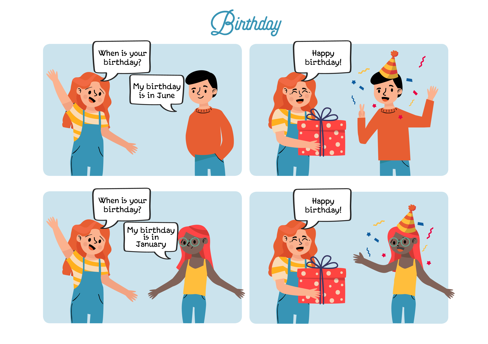
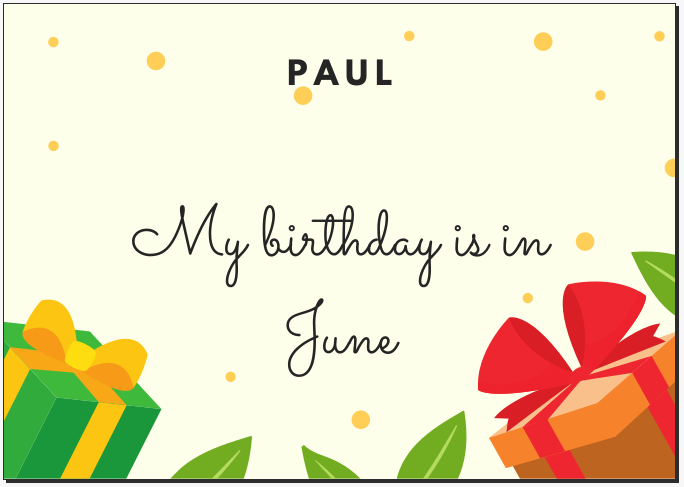

Dictionary
Goal

- Example:
-
My goal is to learn.
Mi objetivo es aprender.
- Spanish word:
-
Objetivo
- Audio:
Partner
- Example:
-
Do it with your partner.
Hazlo con tu compañero.
- Spanish word:
-
Compañero
- Audio:
My goal is to learn.
Mi objetivo es aprender.
Objetivo
Do it with your partner.
Hazlo con tu compañero.
Compañero

Welcome back mate! We are about to start our training for the final goal!
End to be achieved.
Fin que se quiere alcanzar.
My goal is to learn.
Mi objetivo es aprender.
 Welcome.
Welcome.Read the comic.
Explore how to ask.

 Look
Look Asking for the birthday date.
Asking for the birthday date.You already know what your challenge is and the activity that will bring you closer to the goal. But to succeed in your journey, you will need some strategies that will help you in this and other similar tasks. You will discover them in a diary that we call your Learning Diary.
We suggest you first open and complete STEP 1 of the Learning Journal before starting the activity you have just read about!
Document to fill out (Opens in a new window)
Remember:
Go for it, you'll do great!
Ya conoces qué reto te proponemos alcanzar y te acabamos de plantear una actividad que te acercará a la meta. Pero para tener éxito en tu camino, necesitarás algunas estrategias que te servirán para esta y otras tareas parecidas. Las irás descubriendo en un diario que llamamos tu Diario de Aprendizaje.
En esta ocasión te proponemos que lo abras y completes el PASO 1 del Diario de aprendizaje antes de empezar la actividad que acabas de leer!
Haz clic en tu Diario de Aprendizaje.
Recuerda:
¡Ánimo, que lo harás genial!
What you remembered in the previous stage will help you now.
Our goal is to create a birthday calendar as well as an invitation.
The first step is to explore the months of the year.
Train for your final task.
 Remember and continue.
Remember and continue. Make a Birthday calendar.
Make a Birthday calendar. Make an invitation.
Make an invitation. Explore the months.
Explore the months.Cut the pictures.
Play with them.
Try to put the months of the year in order. From 1 to 12.
Document to fill out (Opens in a new window)
First, explore new things. Then, learn about new things.

You are going to work with your partners.
Compare the cards.
Connect with the correct picture.
Person who shares with another.
Persona que comparte con otra.
Do it with your partner.
Hazlo con tu compañero.
Consult the Guide for Cooperative Work to find out how to prepare for a 1-2-4.
Haz clic aquí para consultar nuestra guía para el trabajo en equipo. Aprenderás a usar la técnica 1-2-4.
You are going to work in groups.
Make an invitation.
Explain what you do.


You have already finished the activity “Create an invitation”! Beginnings may cause fear and insecurity.
If you complete STEP 2 of the Learning Diary (Will I be able to do it?), you will see that those feelings are common when you start a task and reflecting on this will help you reduce your insecurities in the next activities.
Remember:
Go for it, you'll do great!
¡Ya has terminado la actividad “Create an invitation card”! Los comienzos te han podido crear miedos e inseguridades a la hora de realizarla.
Si completas el PASO 2 del Diario de aprendizaje (¿Seré capaz de hacerlo?) podrás ver que tus sentimientos son habituales cuando empezamos una tarea y reflexionar sobre ello te ayudará a que en las próximas actividades esa inseguridad sea cada vez menor.
Recuerda:
¡Ánimo, que lo harás genial!
Hi mate!
We are here again!.
It’s time to show your feelings.
Color Kardia according to your own work.
Document to fill out: (Opens in a new window)
Recuerda cómo completar la rúbrica:
Colorea las estrellas para ver cómo has avanzado.
Licensed under the Creative Commons Attribution Non-commercial Share Alike License 4.0